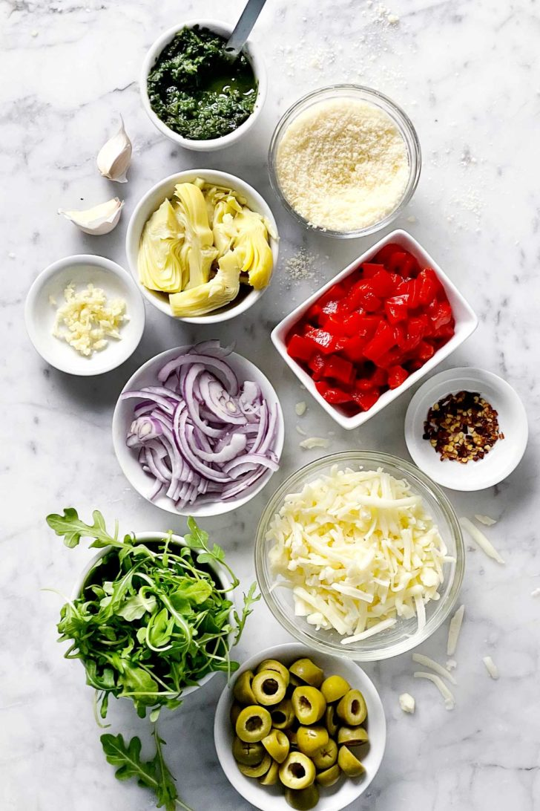
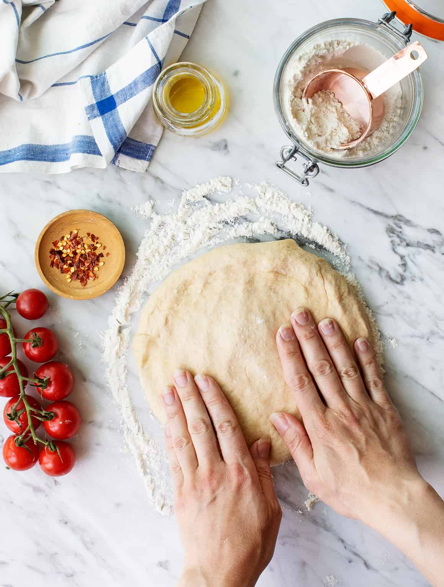

Ciao, Pizzaiolo!
Pizza Recipe
Mastering the Art of Authentic Italian Pizza: Crispy Crusts, Flavorful Sauce, and Delectable Toppings

Prep. Time
1 Hour
Cook Time
10 minutes
Total Time
1 Hour 10 Minutes
Servings
8 Slices

Ingredients
- 1 ball Best Pizza Dough (or Food Processor Dough or Thin Crust Dough)
- ⅓ cup Best Homemade Pizza Sauce
- ¾ cup shredded mozzarella cheese or 2 to 3 ounces fresh mozzarella
- 3 tablespoons Best Basil Pesto or Basil Cashew Pesto
- Semolina flour or cornmeal, for dusting the pizza peel
Procedures
- Make the pizza dough: Follow the Best Pizza Dough recipe to prepare the dough. (This takes about 15 minutes to make and 45 minutes to rest.)
- Place a pizza stone in the oven and preheat to 500°F. OR preheat your pizza oven (here’s the pizza oven we use).
- Make the pizza sauce: Make the 5 Minute Pizza Sauce.
- Prepare the cheese: If using fresh mozzarella cheese, slice it into ¼ inch thick pieces (see the photo). If it’s incredibly watery fresh mozzarella (all brands vary), you may want to let it sit on a paper towel to remove moisture for about 15 minutes then dab the mozzarella with the paper towel to remove any additional moisture.
- Bake the pizza: When the oven is ready, dust a pizza peel with cornmeal or semolina flour. (If you don’t have a pizza peel, you can use a rimless baking sheet or the back of a rimmed baking sheet. But a pizza peel is well worth the investment!) Stretch the dough into a circle; see How to Stretch Pizza Dough for instructions. Then gently place the dough onto the pizza peel.
- Spread the pizza sauce over the dough using the back of a spoon to create a thin layer. Add the mozzarella cheese. Top with a few pinches of kosher salt.
- Use the pizza peel to carefully transfer the pizza onto the preheated pizza stone. Bake the pizza until the cheese and crust are nicely browned, about 5 to 7 minutes in the oven (or 1 minute in a pizza oven).
- Dollop with the basil pesto. Slice into pieces and serve immediately.

Nutritions
Calories: 124kcal | Carbohydrates: 27g | Protein: 3g | Fat: 1g | Saturated Fat: 1g | Cholesterol: 15mg | Sodium: 178mg | Potassium: 114mg | Fiber: 1g | Sugar: 17g | Vitamin A: 229IU | Vitamin C: 1mg | Calcium: 34mg | Iron: 1mg